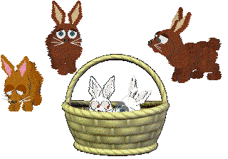

Walret (Catz)

102 (Catz)

Jester (Catz)

Lips (Catz)
Bunny (Catz)
New Petz 2 Breedz
Click breed photo or name to download.
Go here for Species
sounds
Various Species or Fantasy breedz need sounds; if you want them to sound
right in your game, you will have to download the sounds as well. (note --
the bunny's sounds are included in the bunny breed zip)
My Skorch Odd-petz breed is now available here. All 13 of the originals have now been brought into the Catz games.
|
Walret (Catz) |
102 (Catz) |
|
Jester (Catz) |
Lips (Catz) |
|
 Bunny (Catz) |